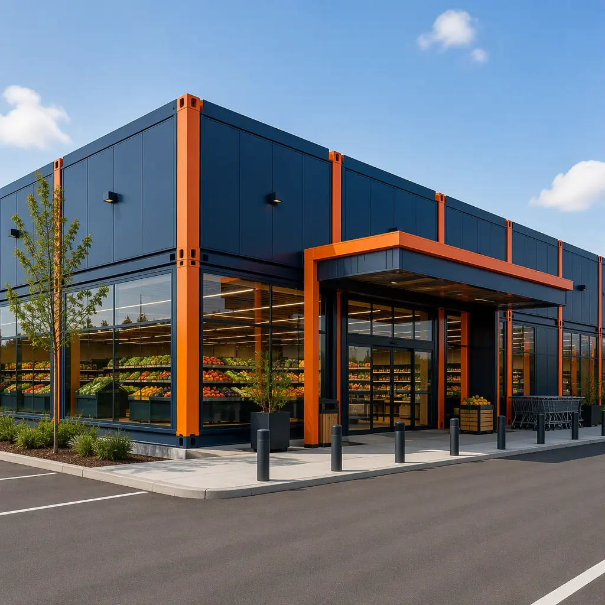
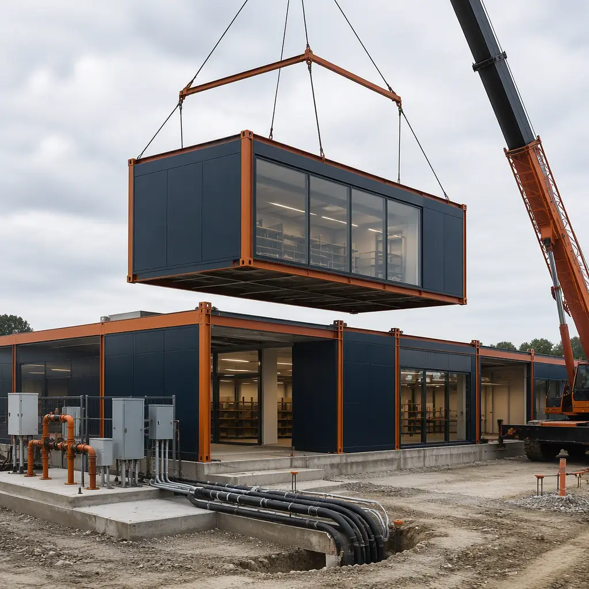
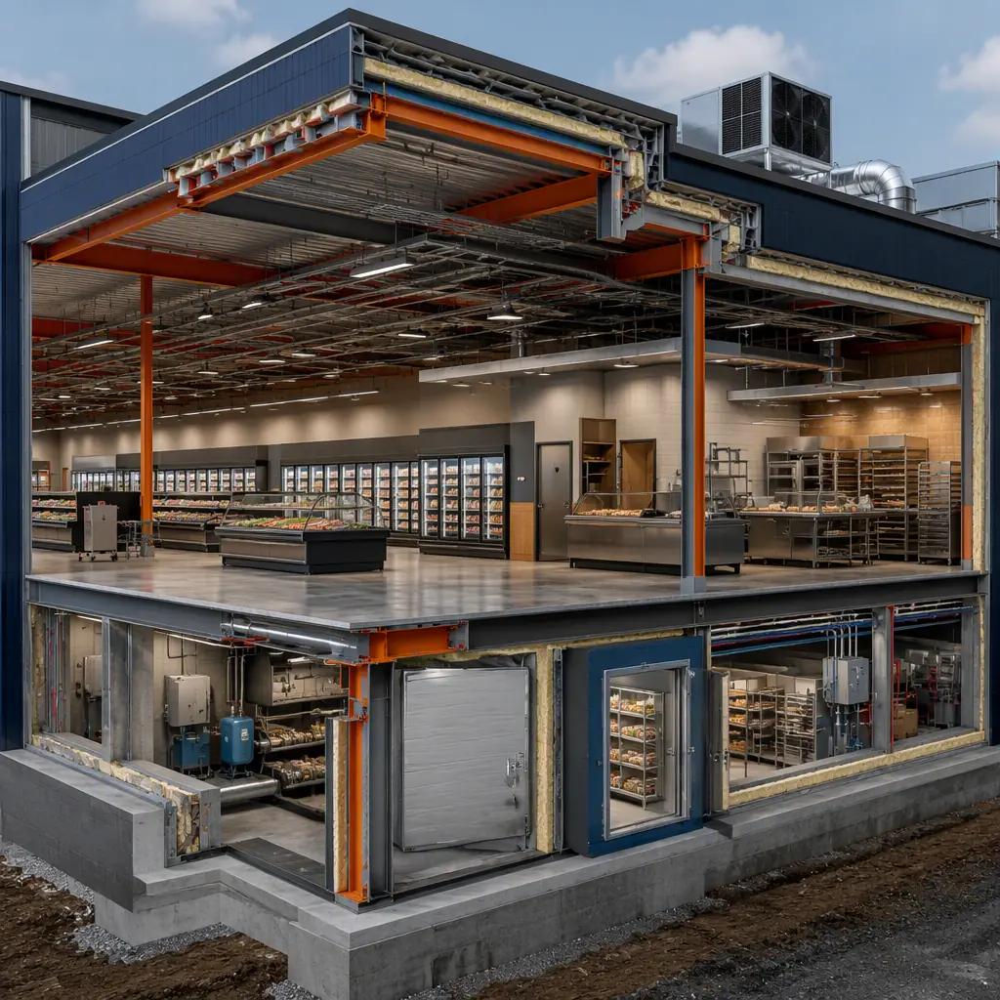
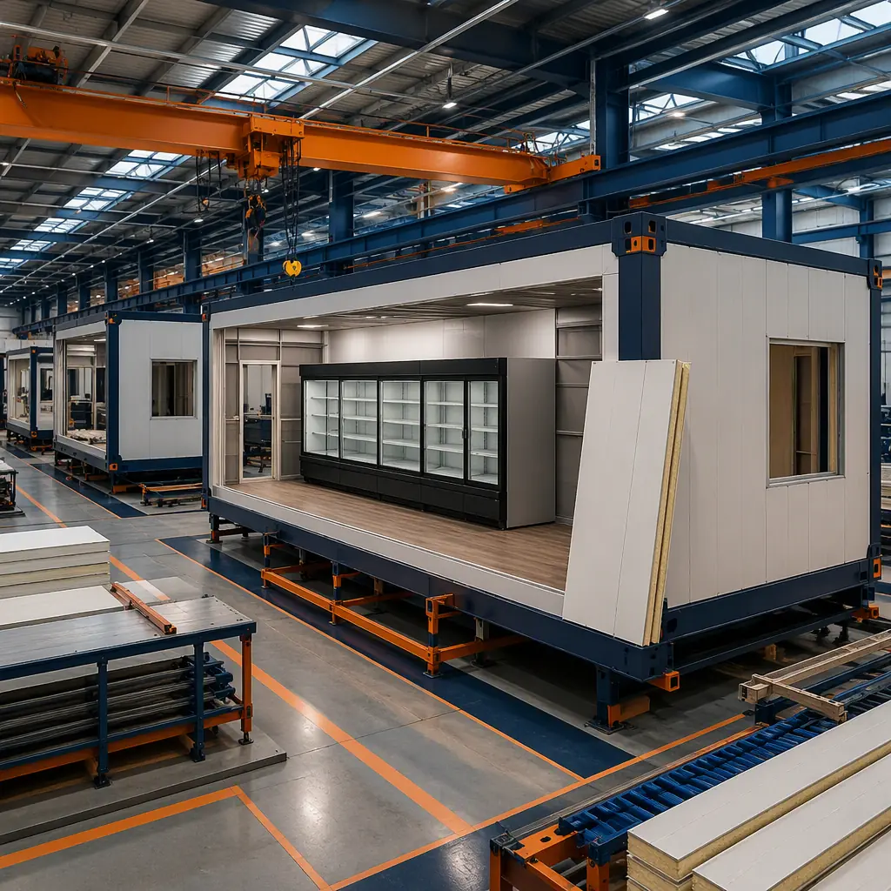

Grocery retail is one of the most schedule-sensitive building types in commercial construction. A supermarket that opens three months late misses lease commitments, supply agreements, and the holiday sales ramp — and grocery margins of 1–3% leave no room for construction overruns. Yet conventional grocery construction routinely runs 12–18 months because the building is a bundle of specialized systems: a refrigerated and frozen envelope, heavy MEP loads, and service departments with health-code inspections. Modular prefabricated construction compresses this to 6–9 months by building the store in a factory — cold chain cases, deli and bakery rooms, electrical and mechanical systems pre-installed in steel-frame modules — so the site work and building production run in parallel and the store opens 50% faster. This guide covers the modular grocery building program, cold chain engineering, energy performance, and rollout strategy. For the broader retail pattern, see our modular retail construction guide.

Why Grocery Retail Is Turning to Modular
Three forces are pushing grocery operators toward factory-built stores. First, the convenience format boom: small-format and urban grocery stores (3,000–15,000 sq ft) are the fastest-growing segment, and chains are rolling out dozens of sites per year — a rollout cadence that favors a repeatable, factory-produced building. Second, labor scarcity: the construction trades shortage documented across the industry makes the 70–80% factory labor shift of modular delivery attractive — the same workforce dynamic covered in modular construction and the skilled labor shortage. Third, food retail's digital shift: click-and-collect and delivery-ready layouts are being retrofitted into stores nationwide, and a factory-built store can be designed with the fulfillment room, staging area, and drive-up pickup canopy as standard modules from day one.
The Modular Grocery Store Package
A modular supermarket is assembled from factory-built modules that map to the store's functional zones:
- Sales floor modules. The main retail space — typically 12,000–45,000 sq ft for a conventional supermarket, 3,000–15,000 sq ft for convenience formats. Factory-built steel-frame modules deliver column-free spans up to 60–80 ft for uninterrupted gondola runs, with ceiling heights engineered for the store's lighting and HVAC design.
- Cold chain modules. The refrigerated and frozen envelope — walk-in coolers and freezers, refrigerated display cases, and the machine room housing the refrigeration racks. These arrive with the insulated panels, evaporators, and rack systems factory-installed and tested.
- Service department modules. Deli, bakery, butcher, and prepared-foods rooms — each with its own health-code requirements: grease traps, ventilation hoods, wash-down finishes, and three-compartment sinks. Factory fabrication standardizes the code package.
- Back-of-house modules. Receiving, storage, break rooms, and the fulfillment room for online orders — the operational backbone that recent store formats have expanded significantly.
The cold chain engineering that makes this work is covered in depth in modular cold storage construction, and the MEP integration in modular MEP systems integration.

Cold Chain Engineering — Refrigerated & Frozen Zones
Refrigeration is the technical heart of grocery construction. A typical supermarket devotes 30–50% of its floor area to refrigerated display and storage, and the refrigeration system consumes 40–50% of the store's total energy. Modular construction addresses both with factory-controlled engineering:
- Refrigeration racks are factory-installed. The machine room module contains the compressor racks, condensers, and controls — pre-piped, pre-charged, and factory-tested. On-site connection is a single refrigerant and electrical tie-in instead of weeks of field piping.
- Insulated envelope integrity. Walk-in cooler and freezer modules use factory-foamed insulated panels with tested thermal performance — R-30 to R-40 walls — eliminating the field-assembly gaps that cause frost and energy loss. The envelope science is documented in modular thermal insulation and energy code compliance.
- Case line integration. Refrigerated display cases are installed in the sales floor modules at the factory, with the condensate drains, power, and lighting pre-wired — reducing the store-fit phase by weeks.
- Refrigerant compliance. EPA SNAP rules and state HFC phasedowns are pushing stores to lower-GWP refrigerants; factory-built systems arrive with the compliant refrigerant charge documented and leak-tested.

Cost Comparison — Modular vs. Conventional Supermarket
| Component | Conventional (30,000 sq ft) | Modular (30,000 sq ft) |
|---|---|---|
| Shell construction (structure, envelope) | $3.6–5.4M | $3.1–4.6M (factory-built) |
| Refrigeration systems & cold chain | $1.8–3.0M | $1.5–2.5M (factory-installed) |
| MEP (HVAC, electrical, plumbing) | $2.1–3.3M | $1.7–2.7M (pre-installed) |
| Service departments (deli, bakery) | $0.9–1.5M | $0.7–1.2M |
| Site work & parking | $1.2–2.0M / sequential | $1.1–1.8M / parallel |
| Total Store Cost | $9.6–15.2M | $8.1–12.8M |
The 12–16% capital saving combines with the schedule: a 30,000 sq ft supermarket at roughly $320–500 per sq ft conventionally runs 12–18 months, while the modular equivalent opens in 6–9 months. For a store doing $300–600 per sq ft in annual sales, each month of earlier opening is worth $750K–1.5M in revenue. Budget benchmarks are in our 2026 modular cost guide.

Bakery, Deli & Service Department Modules
Service departments are where grocery stores win customers — and where conventional construction most often trips on health codes. A modular deli room arrives with the stainless worktables, three-compartment sink, grease interceptor, and ventilation hood factory-installed, with the health department inspection package documented. Bakery modules carry the ovens, proofer, and vented hoods pre-positioned, and the prepared-foods room is engineered for the wash-down and drainage requirements of food service. Because the code package is standardized at the factory, a chain opening 10 stores gets the same approved design 10 times — faster local permitting, fewer surprise inspection findings, and a consistent brand experience. The retail fit-out logic extends the pattern in modular retail construction.
Energy Performance & Refrigeration Loads
Refrigeration dominates grocery energy use — 40–50% of store consumption — so the building envelope and the refrigeration system must be designed together. Modular stores gain energy efficiency three ways. First, the factory-built insulated envelope (R-30–R-40 walls and roofs) reduces the thermal load on the refrigerated envelope, cutting refrigeration energy by an estimated 10–15% versus typical field-built enclosures. Second, factory-tested refrigeration racks run at documented efficiency, and the store can be designed around a heat-recovery strategy where condenser heat offsets space heating. Third, LED lighting with daylight controls is factory-wired into the modules, and the store's HVAC is sized to the real envelope performance rather than worst-case assumptions. The result: modular grocery stores typically target 20–30% lower whole-store energy intensity than comparable conventional builds — significant for an asset class where energy is the second-largest operating cost after labor. The broader efficiency framework is in modular building energy efficiency, and HVAC design in modular HVAC and indoor air quality.
Franchise Rollout & Urban Formats
Modular delivery shines brightest for chains. A grocer rolling out 20–50 stores over three years can standardize one design, produce modules continuously at the factory, and set each store in 2–4 days — turning store construction from a per-site project into a production pipeline with predictable cost and schedule per unit. Small-format urban stores benefit even more: constrained city sites, tight delivery logistics, and noise ordinances favor modules that arrive assembled and set quickly with minimal neighborhood disruption. The rollout playbook is the same one documented for restaurant and retail chains in modular franchise rollout construction.
Is Modular Right for Your Grocery Program?
Modular delivery delivers the strongest value for grocery chains with multi-store rollout programs, for urban and small-format stores on constrained sites, and for any store with a hard opening deadline tied to leases, financing, or seasonal sales. For a one-off rural store with an experienced local builder and no schedule pressure, conventional construction may be competitive. For the standard supermarket program — sales floor, cold chain, service departments, and back-of-house — modular construction compresses the industry's most system-dense building type into the fastest and most predictable delivery path, with refrigeration, MEP, and health-code compliance engineered in the factory rather than improvised in the field.